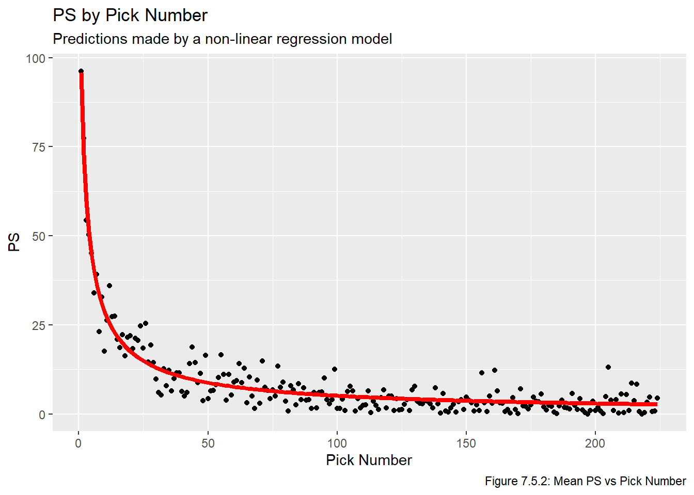
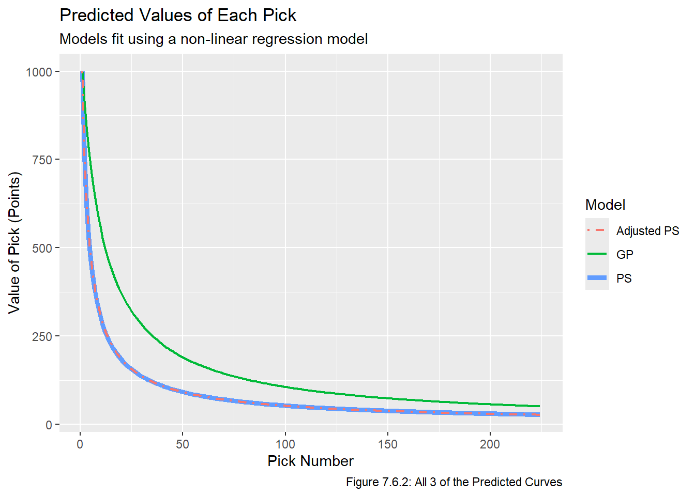

Code
# renv::install("patchwork")
# renv::install("stringr")
# renv::install("reactable")
library(patchwork)
library(stringr)
library(reactable)
source("functions.R") # load functions defined in prior chaptersWe install and load the necessary packages, along with functions from prior chapters.
# renv::install("patchwork")
# renv::install("stringr")
# renv::install("reactable")
library(patchwork)
library(stringr)
library(reactable)
source("functions.R") # load functions defined in prior chaptersNow that we have metrics representing different ways of calculating the historical value of a draft pick, we can now develop models for predicting the value of future picks. First, we will fit a linear regression model to the data, an then we will develop a model via non-linear regression. We will then put the models on the same scale by multiplying each predicted value by a constant, allowing us to compare models more effectively. As always, when fitting a model it is important to ensure that the underlying assumptions of a model hold, otherwise the model can be useless, or even worse, misleading. Note that the following two Stack Overflow posts were once again very helpful when writing the code in this chapter:
Recall the four plots we ended the Transform chapter with, based on the mean PS, mean GP, success rate, and mean adjusted PS for every selection between 1 and 224. For convenience we replot this data below:
(plot_mean_ps + plot_mean_gp) / (plot_suc_rate + plot_mean_adj_ps)
One notable issue with our non-linear model is that most of the models are on very different scales (Mean PS and Mean Adjusted PS goes up to about 100, Mean GP goes up to roughly 1200, and Success Rate only goes up to a maximum of 1). We would like to standardize this to allow for a more direct comparison of models. To do this, we will calculate \(C_m = \frac{1000}{h_{1,m}}\), and then multiply the historical value of every pick by \(C_m\) to get a value out of 1000 where \(h_{1, m} = 1000\) for all metrics. Another point in favour of rescaling is to maintain consistence with existing work such as the research listed in the Question Chapter, which typically make the 1st overall pick worth 1000 “points” and then calculate the relative value of other picks based on that. We do this now because if we do it after fitting a model then we will have to refit all the models anyway.
C_m <- c(1, 1000 / all_data_comb[1,][-1])
all_data_scaled <- all_data_comb * C_m
reactable(all_data_scaled) # confirm it workedNow that all metrics are on the same scale, we can plot them on top of each other.
ggplot(all_data_scaled, aes(x = overall)) +
geom_point(aes(y = mean_ps), col = "salmon", alpha = 0.7) +
geom_point(aes(y = mean_gp), col = "dodgerblue", alpha = 0.3) +
geom_point(aes(y = suc_rate), col = "purple", alpha = 0.3) +
geom_point(aes(y = mean_adj_ps), col = "limegreen", alpha = 0.3)
This plot confirms that mean PS and adjusted PS give very similar estimates, and that value decreases slowest when using Success Rate. Now that we have the plots on the same scale, we can fit models to the scaled data.
We use lm to fit a linear model to each of the metrics:
metrics <- c("mean_ps", "mean_gp", "suc_rate", "mean_adj_ps")
overall <- all_data_scaled$overall
lin_models <- lapply(metrics, \(x) lm(all_data_scaled[[x]] ~ overall))For each linear model, we generate a vector of predicted values and plot it on top of the historical values:
lm_pred_vals <- lapply(seq(1,4),
\(x) predict(lin_models[[x]],
data.frame(overall = seq(1,224))))
lm_pred_vals <- data.frame(overall = seq(1, 224),
mean_ps = lm_pred_vals[[1]],
mean_gp = lm_pred_vals[[2]],
suc_rate = lm_pred_vals[[3]],
mean_adj_ps = lm_pred_vals[[4]])
names <- c("Mean PS", "Mean GP", "Success Rate", "Mean Adjusted PS")
for(i in 1:length(metrics)){
assign(str_glue("plot_{metrics[i]}"),
ggplot(all_data_scaled, aes_string(x = "overall", y = metrics[i])) +
geom_point() +
labs(title = str_glue("{names[i]} verses Overall"),
x = "Overall", y = str_glue("{names[i]}")))
}
for(i in 1:length(metrics)){
assign(str_glue("plot_lm_{metrics[i]}"),
get(str_glue("plot_{metrics[i]}")) +
geom_line(data = lm_pred_vals, aes_string(x = "overall", y = metrics[i]),
col = "red", lwd = 1.5))
}
(plot_lm_mean_ps + plot_lm_mean_gp) / (plot_lm_suc_rate + plot_lm_mean_adj_ps)
The fitted values are given in the table below:
reactable(round(lm_pred_vals, 4))All four of these linear models are very clearly inadequate, but for sake of completeness we will look at plots of the residuals vs fitted values.
lm_resids <- lapply(lin_models, residuals)
lm_resids <- data.frame(mean_ps_resid = lm_resids[[1]],
mean_gp_resid = lm_resids[[2]],
suc_rate_resid = lm_resids[[3]],
mean_adj_ps_resid = lm_resids[[4]])
lm_pred_vals_resid <- cbind(lm_pred_vals, lm_resids)
for(i in 1:length(metrics)){
assign(str_glue("plot_res_{metrics[i]}"),
ggplot(lm_pred_vals_resid, aes_string(x = str_glue("{metrics[i]}"),
y = str_glue("{metrics[i]}_resid"))) +
geom_hline(yintercept = 0, col = "red", lwd = 1.5) + geom_point())
}
(plot_res_mean_ps + plot_res_mean_gp) / (plot_res_suc_rate + plot_res_mean_adj_ps)
Clearly none of these models are appropriate, they very clearly fail the assumptions regarding a correct functional form, constant variance of residuals, and independent residual assumptions. It is also clear that the errors are not normally distributed. Moreover, these models all fail our second requirement for a feasible model in the Approach section of the Question chapter (which is that all picks have a strictly positive value).
Given that none of the four linear models were appropriate, we will reattempt to fit a model using non-linear regression (ie the nls function, which stands for non-linear least squares). The resource Non-linear Regression in R was very helpful when working on this section. In short, we will be fitting the model
\[ v_{i,m} = \frac{\phi_{1, m}}{1+e^{(\phi_{2,m}- i)/\phi_{3,m}}} \]
Where
\(i\) is the pick number.
\(m\) is the metric being used.
\(v_{i,m}\) is the value of pick \(i\) based on metric \(m\).
\(\phi_{1, m},\phi_{2, m},\phi_{3, m}\) are parameters we are estimating which depend on which metric we are using.
We choose to use nls because it allows us to directly fit a model with non-linear parameters, we do not need to transform the explanatory or response variates. We fit these models as follows:
for(i in seq(1,4)){
assign(str_glue("nls_{metrics[i]}"),
nls(all_data_scaled[[i+1]] ~ SSlogis(log(overall), phi1, phi2, phi3)))
}
nls_pred_vals <- data.frame(pick = seq(1, 224),
mean_ps = predict(nls_mean_ps, pick),
mean_gp = predict(nls_mean_gp, pick),
suc_rate = predict(nls_suc_rate, pick),
mean_adj_ps = predict(nls_mean_adj_ps, pick))
for(i in 1:length(metrics)){
assign(str_glue("plot_nls_{metrics[i]}"),
get(str_glue("plot_{metrics[i]}")) +
geom_line(data = nls_pred_vals, aes_string(x = "overall", y = metrics[i]),
col = "red", lwd = 1.5))
}
(plot_nls_mean_ps + plot_nls_mean_gp) / (plot_nls_suc_rate + plot_nls_mean_adj_ps)
These curves all seem to fit well and all seem to generally describe the data, so we seem to have found a correct function to model the data. We can also plot the curves on top of each other since they are on (roughly) the same scale. Note that the scales may not be exactly equal because the predicted value of the first pick may not be exactly 1000 points. When we pick a model we will rescale all the values so that this is the case but for the sake of comparing models this is good enough.
ggplot(nls_pred_vals, aes(x = overall)) +
geom_line(aes(y = mean_ps), col = "salmon", lwd = 1.5, lty = 1) +
geom_line(aes(y = mean_gp), col = "dodgerblue", lwd = 0.85, lty = 2) +
geom_line(aes(y = suc_rate), col = "purple", lwd = 0.85, lty = 3) +
geom_line(aes(y = mean_adj_ps), col = "limegreen", lwd = 0.85, lty = 6)
The mean PS and mean Adjusted PS lines are almost perfectly on top of each other, indicating the adjustment we made to estimate the PS remaining in players’ careers had a minimal impact on the estimate of pick value. Indeed:
mean(abs(nls_pred_vals$mean_ps - nls_pred_vals$mean_adj_ps))[1] 1.504096This tells us that the mean distance between pick value estimated by mean PS and mean Adjusted PS is about 1.5 points, which is effectively nothing since picks are valued out of 1000 points.
We have the following four models. Recall the model we fit is \(v_{i,m} = \frac{\phi_{1, m}}{1+e^{(\phi_{2,m}- i)/\phi_{3,m}}}\) where \(i\) is the pick number, \(m\) is the metric being used, \(v_{i,m}\) is the estimated value of pick \(i\) based on model \(m\), and \(\phi_{1,m}, \phi_{2,m}, \phi_{3,m}\) are the parameters we estimated. Here are the each of the models we fit. In order, they are for mean PS, mean GP, Success Rate, and mean Adjusted PS:
for(metric in metrics){
print(get(str_glue("nls_{metric}")))
}Nonlinear regression model
model: all_data_scaled[[i + 1]] ~ SSlogis(log(overall), phi1, phi2, phi3)
data: parent.frame()
phi1 phi2 phi3
1691.5119 0.4342 -1.2153
residual sum-of-squares: 294409
Number of iterations to convergence: 0
Achieved convergence tolerance: 1.44e-06
Nonlinear regression model
model: all_data_scaled[[i + 1]] ~ SSlogis(log(overall), phi1, phi2, phi3)
data: parent.frame()
phi1 phi2 phi3
1108.213 2.279 -1.036
residual sum-of-squares: 648801
Number of iterations to convergence: 0
Achieved convergence tolerance: 2.447e-07
Nonlinear regression model
model: all_data_scaled[[i + 1]] ~ SSlogis(log(overall), phi1, phi2, phi3)
data: parent.frame()
phi1 phi2 phi3
1078.3555 3.0090 -0.9063
residual sum-of-squares: 1123580
Number of iterations to convergence: 0
Achieved convergence tolerance: 6.513e-07
Nonlinear regression model
model: all_data_scaled[[i + 1]] ~ SSlogis(log(overall), phi1, phi2, phi3)
data: parent.frame()
phi1 phi2 phi3
1587.8630 0.5685 -1.1877
residual sum-of-squares: 256119
Number of iterations to convergence: 0
Achieved convergence tolerance: 1.929e-07We now have four models which are backed by historical data. Additionally, all four of them seem feasible based on the criteria we noted in the Approach section of the Question chapter since clearly the lines we have fit are decreasing and \(>0\) for all \(i\) (since \(\phi_{1,m} >0\) for all four models). Now that we know the models are all feasible, we check the model assumptions regarding independence, normality, and constant variance of the residuals (these assumptions as the same as the assumptions when performing linear regression). We plot the residuals on the same scale to make comparing plots across models easier.
nls_fitted_resid <- cbind(nls_pred_vals, all_data_scaled[,-1] - nls_pred_vals[,-1])
colnames(nls_fitted_resid) <- c("overall", "mean_ps", "mean_gp", "suc_rate",
"mean_adj_ps", "resid_mean_ps", "resid_mean_gp",
"resid_suc_rate", "resid_mean_adj_ps")
for(metric in metrics){
assign(str_glue("plot_fitted_resid_{metric}"),
ggplot(nls_fitted_resid, aes_string(x = metric,
y = str_glue("resid_{metric}"))) +
coord_cartesian(ylim = c(-200, 200), xlim = c(0, 1000)) +
geom_hline(yintercept = 0, col = "red") + geom_point(alpha = 0.25))
}
(plot_fitted_resid_mean_ps + plot_fitted_resid_mean_gp) /
(plot_fitted_resid_suc_rate + plot_fitted_resid_mean_adj_ps)
It’s pretty clear that the model based on Success Rate has the largest variance. Howver, since all four models (unsurprisingly) have fit the vast majority of values to be small, the data is crammed on the left side of the plot, making it harder to check the model assumptions. We instead look at a plot of residuals vs overall.
nls_fitted_resid <- cbind(nls_pred_vals, all_data_scaled[,-1] - nls_pred_vals[,-1])
colnames(nls_fitted_resid) <- c("overall", "mean_ps", "mean_gp", "suc_rate",
"mean_adj_ps", "resid_mean_ps", "resid_mean_gp",
"resid_suc_rate", "resid_mean_adj_ps")
for(metric in metrics){
assign(str_glue("plot_fitted_resid_{metric}"),
ggplot(nls_fitted_resid, aes_string(x = "overall",
y = str_glue("resid_{metric}"))) +
coord_cartesian(ylim = c(-200, 200), xlim = c(0, 224)) +
geom_hline(yintercept = 0, col = "red") + geom_point(alpha = 0.25))
}
(plot_fitted_resid_mean_ps + plot_fitted_resid_mean_gp) /
(plot_fitted_resid_suc_rate + plot_fitted_resid_mean_adj_ps)
The model based on Success Rate has some pretty clear patterns in the data, so we have concerns surrounding the independent errors assumption. The other three plots show a little bit of fanning, so there may be an issue with the constant variance assumption. However, this is probably because the early picks in a draft are all going to be estimated to have a much larger value than the later picks, so those picks having a higher variance is not super surprising. Finally, we look at a QQ plot of the data.
par(mfrow = c(2,2))
for(metric in metrics){
qqnorm(nls_fitted_resid[[str_glue("resid_{metric}")]])
qqline(nls_fitted_resid[[str_glue("resid_{metric}")]])
}
Recall that since the correlation between PS and GP was \(\approx\) 0.85, we will not use a model which incorporates both due to multicollinearity concerns. Given the choice, we prefer to use a metric based on PS rather than GP for a few reasons.
PS credits players for contributing to their team, whereas GP gives credit for being good enough to play for a team.
While both metrics are right skewed, in this context we prefer a metric which has a longer right tail since this will allow us to distinguish good players from elite players. Specifically, there is a hard cap on how many games a player can play in a certain time frame, but the limit on PS is impossible to reach (a player would have to win every game in his career and be fully responsible for each and every win). In other words, if two players each played in 82 games per season for 10 seasons before retiring, they would both have played in 820 games, but their PS values could be quite different, indicating that PS is a more distinguishing metric. We know PS has a longer tail because the maximum of PS is more standard deviations away from the mean than the maximum of GP, as we showed at the start of our EDA.
The PS formula includes time on ice, which tends to be a better measure of player involvement than GP. For example, Player A who plays 20 minutes a night and and Player B who plays 10 minutes a night may have the same GP, but Player A would likely be considered more valuable because he plays twice as much.
With this in mind, we choose the model based on mean PS (not adjusted PS). As the plot with each curve showed, there is almost zero difference between the models based on mean PS and mean Adjusted PS models. Therefore we prefer to use the simpler model, which in this case is mean PS. Despite mean Adjusted PS having a smaller sum of squared residuals, the RSS was not that much higher for the model based on mean PS, so we prefer to use the simpler model. This also removes any concerns regarding the adequacy of our estimations regarding remaining career length.
Scale pick 1 to 1000 points. Create value and pick functions.